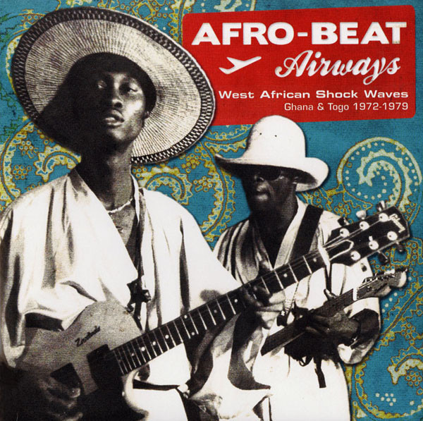
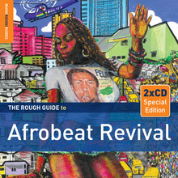
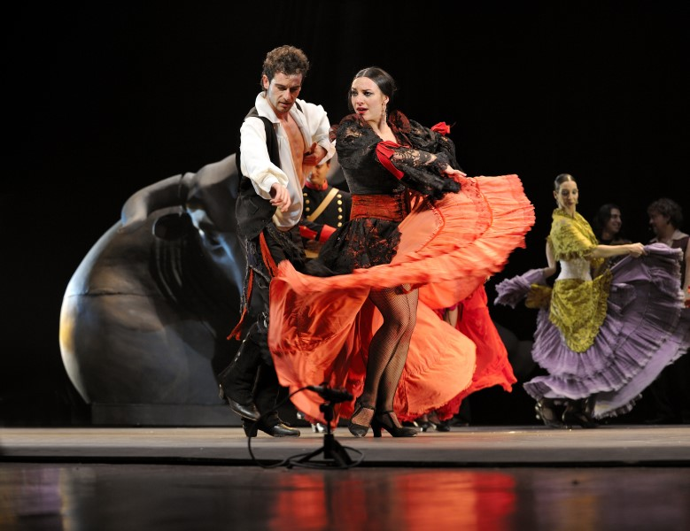
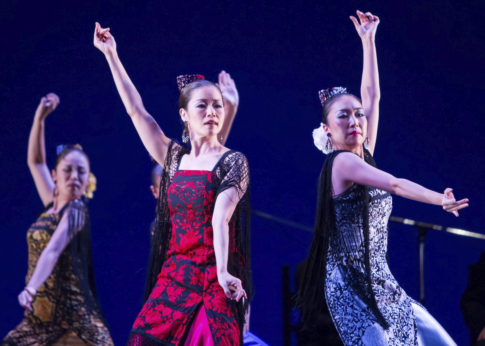
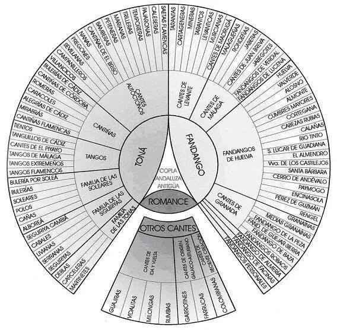

Afrobeat is a music genre which developed in the 1970s out of a combination of West African musical styles, such as Juju Music,It began in
Nigeria in the early ‘70s with Ghanaian influences. Nigeria's most referred, mainstream, internationally toured and Grammy recognised Country
music, Fuji music, which was influenced by the western essembles borrowed from its leading native category (the Juju music) and highlife together
with American funk and jazz, with a focus on chanted vocals and percussion.

The term was coined by Nigerian multi-instrumentalist and bandleader Fela Kuti. It popularised the style both within and outside Nigeria. It was partially
borne out of an attempt to distinguish Fela Kuti's music from the soul music of American artists such as James Brown.
Afrobeat originated from Ghanaian highlife, Fuji and heavy Nigerian drumbeats. It was later exported to the southern part of Nigeria in
the 1970s, by Fela Kuti, who experimented with many different forms of contemporary music of the time.
The new sound hailed from a club
that he established called the Afrika Shrine. Upon arriving in Nigeria, Kuti also changed the name of his group to Africa '70. The band maintained
a five-year residency in the Afrika Shrine from 1970 to 1975 while afrobeat thrived among Nigerian youth.

Flamenco
Flamenco, in its strictest sense, is a professionalized art-form based on the variousfolkloric music traditions of Southern Spain in the autonomous
communities of Andalusia, Extremadura and Murcia. In a widersense, it refers to these musical traditions and more modern musical styles which have
themselves been deeply influenced byand become blurred with the development of flamenco over the past two centuries. It includes cante (singing), toque
(guitar playing),baile (dance), jaleo (vocalizations), palmas (handclapping) and pitos (finger snapping).

The oldest record of flamenco dates to 1774 in the book Las Cartas Marruecas by José Cadalso. The genre originated in the music and
dance styles of Andalusia, of much older origin.
In recent years, flamenco has become popular all over the world and is taught in many non-Hispanic countries, especially the United States
and Japan. In Japan, there are more flamenco academies than there are in Spain.

Palos (formerly known as cantes) are flamenco styles, classified by criteria such as rhythmic pattern, mode, chord progression, stanzaic form and
geographic origin.There are over 50 different palos, some are sung unaccompanied while others have guitar or other accompaniment.

In traditional flamenco, young people are not considered to have the emotional maturity to adequately convey the duende (soul) of the genre.
Therefore, unlike other dance forms, where dancers turn professional early to take advantage of youth and strength, many flamenco dancers do
not hit their peak until their thirties and will continue to perform into their fifties and beyond.